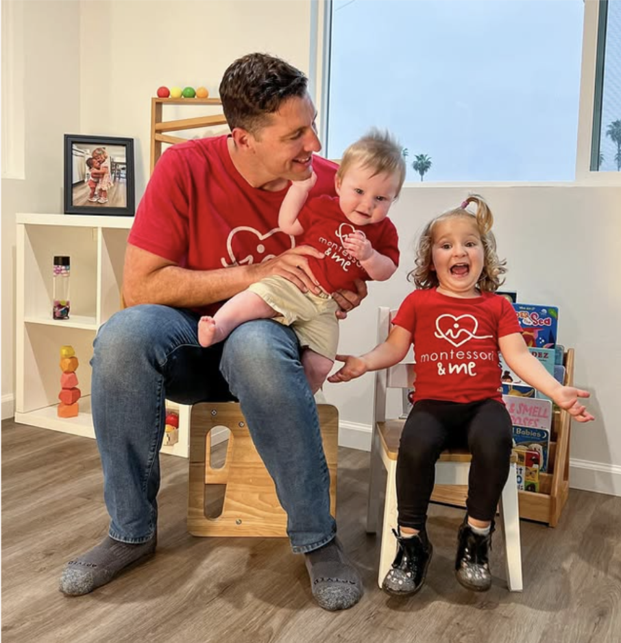
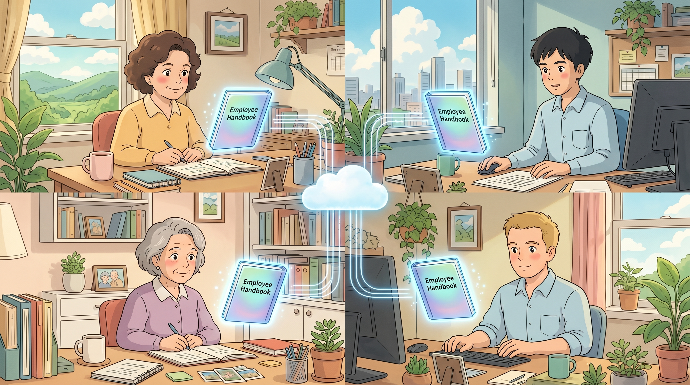

Build your LLM team wiki.
The shared brain your humans and your AIs are missing.
Andrew Erickson.
- 2010Graduated with an applied math & engineering degree.
- 2015Started selling on Etsy and Amazon.
- 2021First 7-figure Amazon exit.
- 2023AI Grand Prize winner · 7-Figure Seller Summit.
- 2026AI Grand Prize winner · Kevin King's Billion Dollar Seller Summit.
- 100+Custom-designed products launched.
I'm excited to announce… I just had my second successful exit!

InventoryHero.ai + the community around it.
AI or Die.

Founder and CEO, NVIDIA · paraphrased, GTC 2024
The best businesses will be 3 to 10 people, each with 3 to 10 AIs.
CEO, Salesforce · paraphrased, Dreamforce 2024
So how do we build that?
One company. 10 humans. 50 agents. How do they all share a common knowledge base?
What you'll learn.
- 01How AI memory actually works, in human terms.
- 02Why every memory hack you've tried breaks at the team level.
- 03The AI Employee Handbook framework.
- 04Two ways to deploy it today, power-user and easy-button.
Your AIs have amnesia.
AI memory is broken, especially for teams.
You don't need a smarter AI. You need a shared knowledge base.
Co-founder and CEO, Box
Don't wait until the talk ends.
Sign up for a free account at InventoryHero to set up your shared team memory.
The anatomy of AI memory.
The types of AI memory we'll cover.
- 01Context
- 02Vector
- 03RAG
- 04LLM Wiki
- 05Team Memory
Think of your AI as an employee in their home office.
Context Window.
What your AI is working on in this specific session.
Context Window.
Think of your AI as a consultant in a home office.
The context window. Sharp. Ephemeral.
Short-term, in-the-moment focus. Incredibly sharp, and gone the moment the chat ends. This is why "memory" doesn't survive a new conversation.
Vector embeddings + retrieval.
Your knowledge becomes coordinates in N-dimensional space. When you ask, the AI fetches the relevant chunks into working memory on demand. This is how you give an AI a past.
Memory isn't a feature.
It's the difference between a VA on Day 1 and an ops manager on Year 3.
Co-founder and CEO, Perplexity · paraphrased
The hierarchy of memory tools.
Four tiers. Only one works for a team.

(I asked: do you share it with your team? He said no.)
You don't need a smarter memory system. You need a different one.
The AI Employee Handbook.
Your AIs aren't readers. They're workers.
Forget "knowledge base." Forget "wiki." Forget "second brain." What workers need is an employee handbook.
Five categories. No 10,000 pages.
Every facet of an FBA business. One shared brain.
- 00-business
- 01-strategy
- 02-account-health
- 11-legal-ip
- 04-sourcing-suppliers
- 05-inventory-planning
- 06-logistics
- 07-finance
- 03-catalog-listings
- 08-advertising
- 09-marketing-brand
- 10-customer-service
- 12-team-operations
- 13-reference
Rigid databases die. Markdown adapts.
Every file knows how complete it is.
<!-- Context Completeness: 10% --> <!-- AI Directive: Trigger Socratic interview to fill gaps --> ## Brand voice [TBD, interview pending]
The AI asks four questions. You answer in plain English. The file fills itself out.
This isn't a wiki. It's onboarding, for every AI you'll ever hire.

CEO, Anthropic · That day is today.
The power-user route.
Free and advanced. Or hosted and easy.
Plain text. Git-tracked. Free forever.
repo/ ├── README.md # the map ├── prompts/ # reusable templates ├── context/ # the Handbook lives here │ ├── brand/ │ ├── products/ │ ├── marketing/ │ └── operations/ ├── data/ # SP-API, reviews, sales └── outputs/ # AI-written drafts
From nanoGPT, llm.c, and the Software 3.0 talk. Diffable, forkable, yours.
Shockingly good. And free.
GitHub as memory. In seven moves.
- 01Create a private repo:
my-brand-handbook. - 02Drop in the Karpathy folder structure.
- 03Open it in Claude Code.
- 04"Write 5 TikTok Shop hooks for ASIN B0XXX."
- 05Review · commit · push.
- 06On laptop two:
git pull. Memory is there. - 07Add your VA as a collaborator. Same brain.
It depends on who's on your team.
- You're comfortable in a terminal.
- You use Cursor or Claude Code daily.
- You want $0 in monthly cost.
- You sell products and ship code.
- You've never run
git push. - Your team is mostly VAs and creatives.
- You want this working in 5 minutes.
- You want it on your phone.
You'll spend an afternoon. You'll Google "merge conflict." Your VAs won't touch it.
Which is why most $1M,$10M teams want Road 2.

Adapted from "Software 3.0" · paraphrased
The easy button.
Two tools. One librarian. One database.
Two tools. That's it.
Atomic, versioned writes. Sonnet 4.6 picks the right doc. No delete tool exists. Tenant isolation enforced at the database.
You don't fill 71 blank files. It interviews you.
- 01Your AI runs a Socratic interview about your brand.
- 02You answer in plain English while you work.
- 03The librarian files each answer into the right docs.
- 04Upload PDFs and supplier sheets, it absorbs them.
- 05Watch
/handbookfill up over a few days.
On a run. Headphones in. Brand voice intact.
"Draft 3 TikTok Shop hooks for ASIN B0XXX. Use my brand voice."
Gemini calls read_memories() → pulls brand guidelines + listing context →
writes hooks that actually sound like the brand.
One sentence in. Three documents updated.
"Drop Supplier X. QC issues two batches in a row. Tighten reorder rules for that category."
- 04-sourcing/supplier-directory.md
- 04-sourcing/qc-philosophy.md
- 01-strategy/decision-log.md
If you signed up at slide 17, you're already live.
- ·Signing up now? Set up by slide 60.
- ·Signing up at Q&A? Set up by the time you stand.
- ·8-figure sellers, you'll break us. We'll wear it like a badge.
Four ideas. One outcome.
The Amazon sellers who win the next 5 years won't have the smartest AIs. They'll have the best-onboarded ones.

Chair and CEO, Microsoft
AI Hackathon. Tuesday, June 2.
9 AM PT · 12 PM ET · 5 PM London
- ·Spin up your Employee Handbook.
- ·Wire up the GitHub path (Road 1).
- ·Install the InventoryHero MCP (Road 2).
- ·Live Q&A with the dev team.
InventoryHero.ai. Beta open.
The agentic inventory OS for Amazon.
- ·Talks to SP-API in plain English.
- ·Detects stockouts, overstock, reorder risk.
- ·Acts, not just reports.
- ·Amazon → Shopify → TikTok Shop ready.